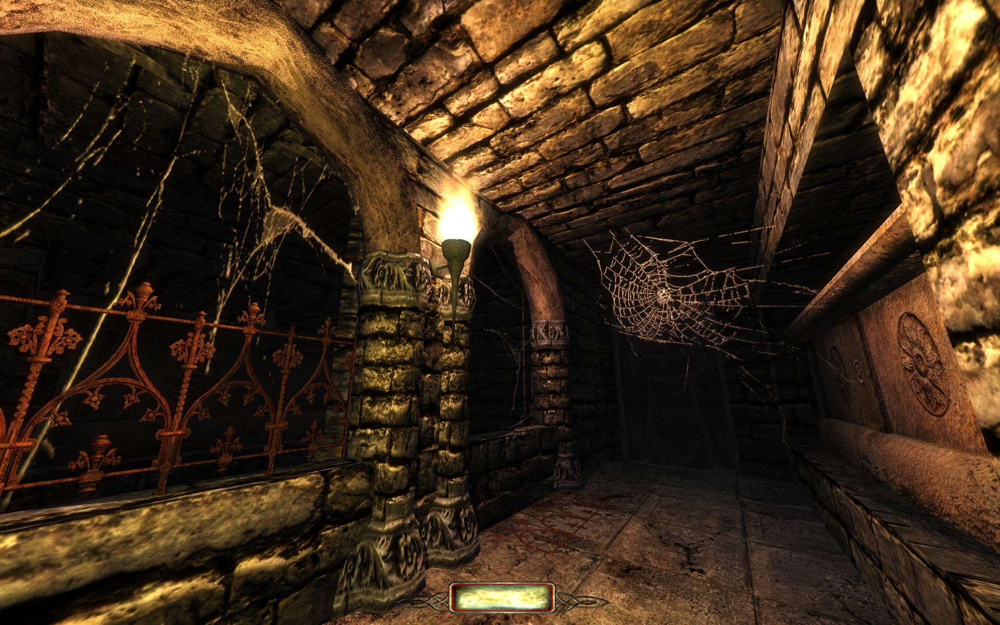
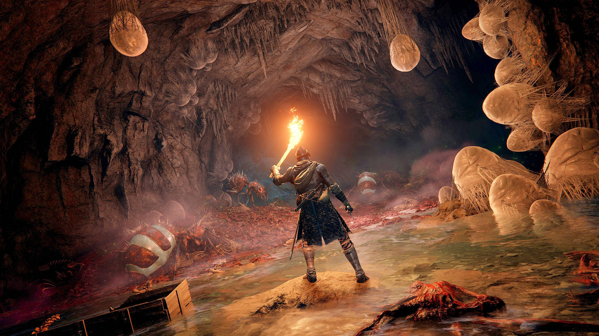
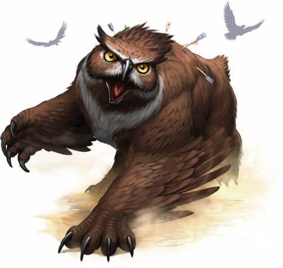
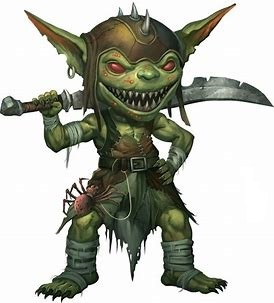
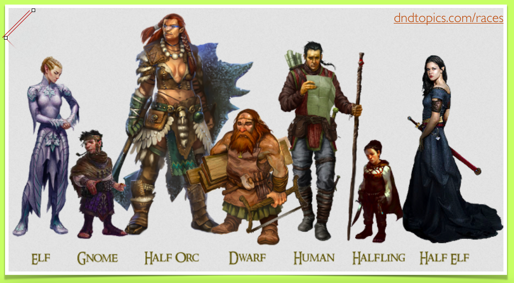
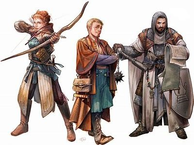

Lore/Historia
Los múltiples mundos de Dungeons & Dragons son lugares de magia y monstruos, de valientes guerreros y aventuras espectaculares. Parten de una base de fantasía medieval y sobre ella añaden las criaturas, localizaciones y magia que hacen únicos a estos mundos.
 Bestiario
En D&D hay monstruos de todas las formas y tamaños, con historias que no solo nos emocionan, sino que también nos hacen sonreír. Sin embargo, la mayoría de monstruos que moran en el mundo de D&D suponen amenazas que deben ser detenidas: demonios devastadores, diablos confabuladores, muertos vivientes capaces de robar el alma, elementales invocados... e incontables más
 Razas
Tu elección de raza afectará a muchos aspectos de tu personaje. Establece las aptitudes fundamenta les que perdurarán a lo la rgo de toda la carrera como aventurero de tu personaje. Cuando tomes esta decisión, ten en cuenta el tipo de aventurero con el que quieres jugar. Un mediano, por ejemplo, será una buena elección para un furtivo pícaro, mientras que un enano podrá convertirse fácilmente en un resistente guerrero y un elfo en un maestro de la magia arcana.
Clases
Los aventureros son individuos extraordinarios, empujados por su sed de emociones a una vida que otros no osarían llevar. Son héroes, obligados a explorar los rincones oscuros del mundo y asumir desafíos a los que hombres y mujeres de menor valía no podrían enfrentarse. La clase es el aspecto que define en mayor medida lo que tu personaje puede hacer. No es un simple oficio, sino su vocación. Las clases determinan tu forma de concebir e interaccionar con el mundo, así como tus relaciones con los demás y con los poderes del multiverso
